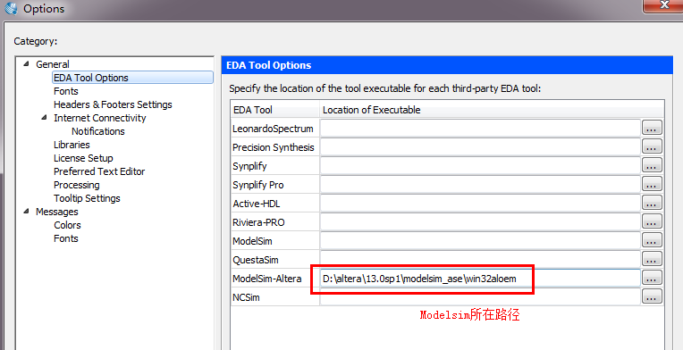
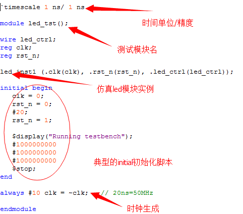
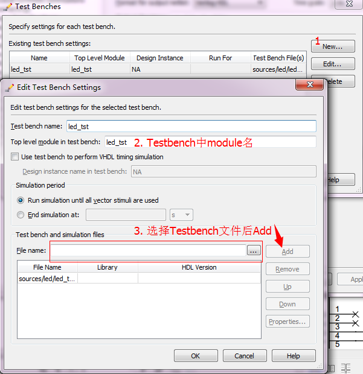

执行Tools -> Options -> General -> EDA Tool Options，设置Modelsim路径如下：

一般设置好一次以后就不用设置了。
使用模板：
执行Processing -> Start -> Start Testbench Template Writer生成Testbench模板文件，
使用File->Open打开在工程simulation目录下的Testbench文件进行编辑
手动编写：
File -> New...，选择Verilg HDL File，Testbench文件命名后缀最好使用*_tst.vt，在新建的文件中编写逻辑，如下例所示：

执行Assigments -> Settings -> EDA Tool Settings -> Simulation设置仿真参数

一路OK，执行Tools->Run Simulation Tools->RTL simulation则弹出Modelsim的仿真界面，就可以进行仿真分析了。